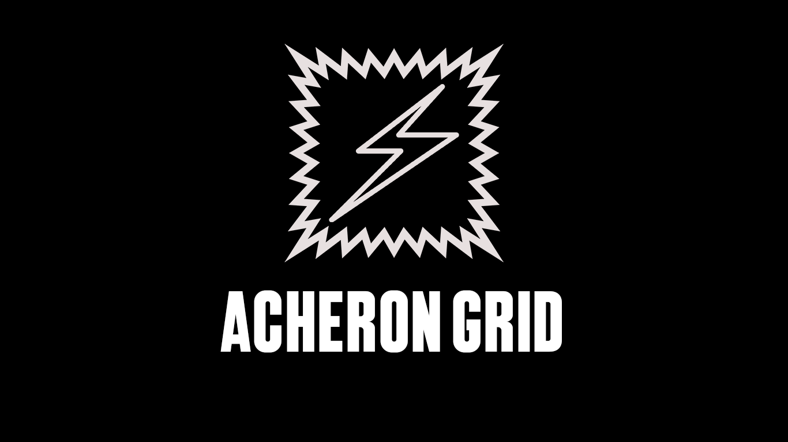

******************************************************************* * A C H E R O N G R I D — ЕДИНАЯ ЭНЕРГОСИСТЕМА СОДОМА * * С У Т О Ч Н А Я С В О Д К А — ФОРМА 74-C * *******************************************************************
Корпорации принадлежит каждая турбина, каждая подстанция и каждый метр кабеля в границах Содома. Ни один контракт верхнего яруса и ни одна лачуга нижнего уровня не получает ток и тепло без разрешения Совета.
Совет директоров напоминает партнёрам: свет — не услуга, а привилегия, предоставляемая корпорацией по своему усмотрению. История помнит цену попыток оспорить это силой (см. арх. «КОРПОРАТИВНАЯ ВОЙНА», 1953).
Происхождение топлива, применяемого на нижних контурах, комментариям не подлежит. Официальная позиция корпорации по данному вопросу изложена в меморандуме СД-19 и является исчерпывающей.
| ПРОМЫШЛЕННОЕ ЭНЕРГОСНАБЖЕНИЕ, КОНТРАКТ «А» | ВНЕ ОЧЕРЕДИ | |
| РЕЗЕРВНЫЙ КОНТУР ИСПОЛНИТЕЛЬНЫХ БАШЕН | ГАРАНТ. | |
| ПРИЁМ ВТОРИЧНОГО/НИЗКОСОРТНОГО ТОПЛИВА | ПО РЕГЛАМЕНТУ | |
| ПЛАНОВЫЕ ОТКЛЮЧЕНИЯ НИЖНИХ КВАРТАЛОВ | БЕЗ АПЕЛЛЯЦИЙ | |
| АВАРИЙНЫЙ ВЫЕЗД, КАТЕГОРИЯ «КРИТИЧНО» | ДО 60 МИН. |
КОНТУР СЕКТОР НАГРУЗКА СТАТУС ------ ---------------------------------- -------------------- ------------ R-1 ВЕРХНИЙ ЯРУС, КОРП. БАШНИ [############......] В НОРМЕ R-2 ПРОМЗОНА IRONVALE / JIUDING [###################.] ПЕРЕГРУЗКА R-3 НИЖНИЙ УРОВЕНЬ, ЖИЛЫЕ БЛОКИ [##########..........] В НОРМЕ R-5 ВНЕШНИЙ ПЕРИМЕТР / NACHTWÄCHTER [##############......] В НОРМЕ R-0 ГЛУБИННЫЙ КОНТУР — ОБЪЕКТ «АДАМ-000» [####################] ДИРЕКТОРАТ
Телеметрия контура R-0 не подлежит передаче за пределы Совета директоров. Персонал, зафиксировавший попытку стороннего доступа, обязан немедленно уведомить Службу внутренней безопасности.
Приложена фотокопия консоли дежурного оператора в момент последней зафиксированной попытки постороннего подключения к внутреннему контуру.